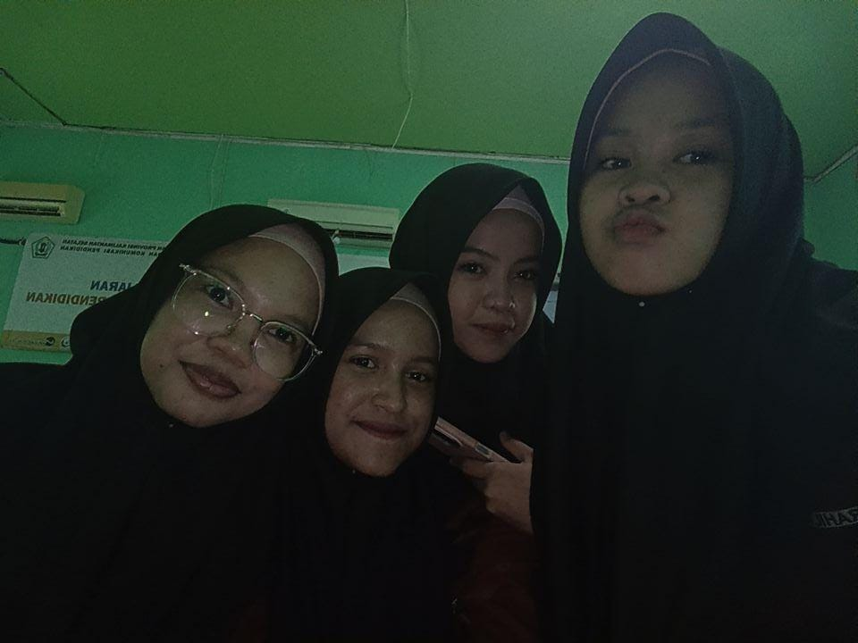
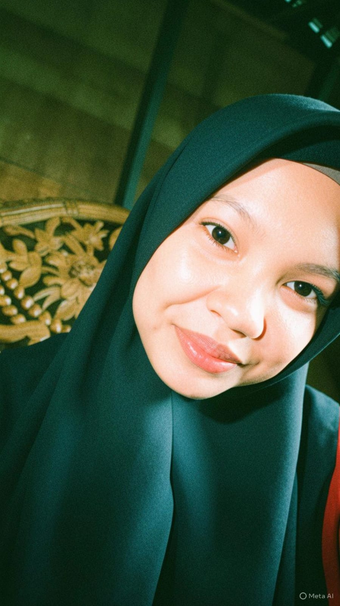
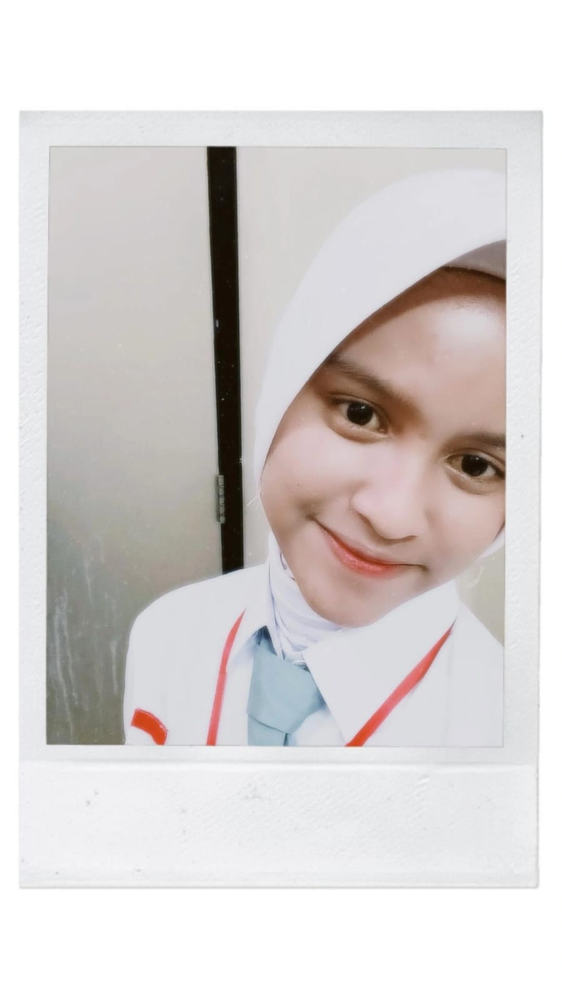

Kelas X Teknik Komputer dan Jaringan (TKJ) di SMKN 2 Marabahan adalah tempat di mana kami mempelajari dasar-dasar perangkat keras komputer, sistem operasi, dan jaringan dasar. Kami dipersiapkan untuk menjadi teknisi jaringan yang andal dan profesional.
Menjadi kelas unggulan yang mencetak teknisi jaringan kompeten dan berakhlak mulia.
Disiplin dalam belajar, aktif dalam praktik, dan inovatif dalam memecahkan masalah IT.
Pengurus Inti Kelas X TKJ
-

Ketua Kelas

Wakil Ketua
Sekretaris
Bendahara